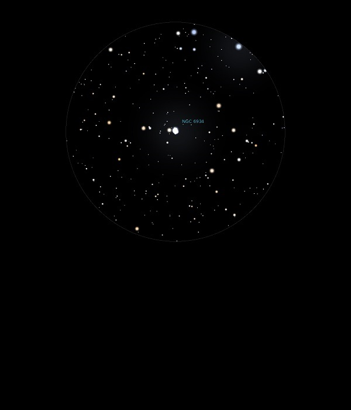

NGC 6934
Globular Cluster in Delphinus
NGC 6934
Mag 8.9
Caldwell 47, GC Class VIII
04/11/13
Small
and fuzzy but feels like it spreads out
Sits
inside what looks like an open cluster
Very
attractive starfield
06/07/14
Small but surprisingly bright, tight ball in both 25mm and
12mm
Easy to locate in a rich starfield very close to a Mag 9.15
star
Very attractive considering its magnitude
09/07/15
A tight blob of haze in 25mm which sits next to a star of Mag
9.15, which in turn forms a neat polygon of four stars of
which HIP 101571 at Mag 8.40 and HIP 101560 at Mag 8.75 are
the brightest and at opposite corners
Not resolved even using Barlow with 12mm, in 12mm without
Barlow forms the 'nose' of a dog, a neat asterism of stars of
Mags 9, 10 and 11
25/08/16
Hunting Globular Clusters around Delphinium
Just viewed C42 at Mag 10.6, C47 is much brighter at Mag 8.9
with perhaps a hint of resolution of some of the outer stars
in 12mm?
Easy to locate, forming a nice triangle in 12mm with HIP
101571 at Mag 8.4 and HIP 101560 at Mag 8.75 so all three
around the same magnitude